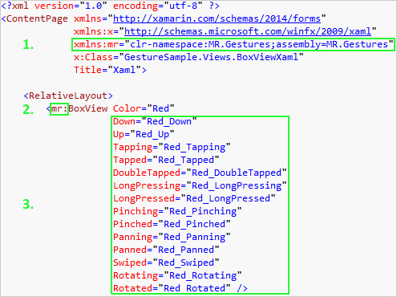

Xamarin Forms is great if you want to develop apps for different mobile platforms. But when it comes to touch gestures, it is still very limited.
For more than a year they only had the TapGestureRecognizer. Although they did add some others lately, they still don't provide all information which you need.
Furthermore the API which they use has been copied from iOS and is not what a .NET developer would expect.
MR.Gestures tries to close that gap.
It adds Down, Up, Tapping, Tapped, DoubleTapped, LongPressing, LongPressed, Panning, Panned, Swiped, Pinching, Pinched, Rotating and Rotated
events to each and every layout, cell and view and to the ContentPage.
These events will be raised when the user performs the corresponding touch gesture on the element.
In the EventArgs passed to the handlers you can see exactly what happened.
You can work with the touch gestures completely from the .NET Standard / PCL project. The platform specific code is all done in MR.Gestures.
If you just want to see how it works, then download the free GestureSample app from GitHub. In this app you can see how all the elements use all events. You can change the code however you like, add break points and see what it does. You will find all the examples from here in the GestureSample and many more.
To add MR.Gestures to your own app just follow these simple steps:
And now you can use the new elements from the namespace MR.Gestures.
All the elements which are usually in the Xamarin.Forms namespace can also be found in MR.Gestures. But those have additional event handlers and command properties.
Adding the event handlers works the same way as in standard Xamarin Forms or WPF controls in both XAML and code.
To add the event handler in XAML you have to:

Here on LongPressed the method Red_LongPressed should be called. The method must be defined in the code behind file like this
void Red_LongPressed(object sender, MR.Gestures.LongPressEventArgs e)
{
Console.WriteLine("BoxViewXaml.Red_LongPressed method called");
}
Of course you can do the same in code. Either with a lambda expression
var box1 = new MR.Gestures.BoxView { Color = Color.Red };
box1.LongPressed += (s, e) => { Console.WriteLine("Code: Red LongPressed"); };
or by assigning the method as a handler.
box1.LongPressed += Red_LongPressed;But IMHO if you want to write clean MVVM, then the view should be in XAML and the code behind empty. So instead of the event handlers you can also use commands in your view model and bind them to the respective properties.
<mr:BoxView Color="Green"
LongPressedCommand="{Binding LongPressedCommand}"
LongPressedCommandParameter="Green"
The properties for the commands are called like the events, just with Command appended. You can also define a parameter passed to the command with the ..CommandParameter properties. If you suppress the CommandParameter, then the respective event args are passed to your command. In this case a MR.Gestures.LongPressEventArgs object.
For the Tapped, DoubleTapped and LongPressed events you may not need the event args and defining a CommandParameter could make sense. But for the more complicated events you will always need the event args or you won't know what happened. E.g. it does not help to just know that an element has been swiped unless you also know in which direction. The Direction is contained in the SwipeEventArgs.
You can bind the commands in code too.
var box2 = new MR.Gestures.BoxView { Color = Color.Green };
box2.SetBinding(MR.Gestures.BoxView.LongPressedCommandProperty, "LongPressedCommand");
box2.LongPressedCommandParameter = "Green";
The syntax for binding in code is a bit complicated, therefore my favorite is using commands in XAML. You will also see this, when you look through the code in GestureSample. Although there are samples in all these categories, most of them are written in XAML and bound to commands.
MR.Gestures is licensed per app name. I.e. if your app has the same name on all platforms, you only need one license key. If you have different versions of your app with different names (e.g. different languages, customized for different clients or free and pro), then you need a separate key for each version.
You can use it for as many developers on as many computers as you like.
The price for one license is EUR 40,00 (+VAT).
The payment process will be handled by MyCommerce. You will be forwarded to their site when you click the Buy button.
Once you purchased a license, instructions how to configure it will be displayed on the MyCommerce page. These instructions can also be found in the email they will send you and in the FAQs.
If you forget to configure the license key properly, then all the events will still be raised, but the properties of the EventArgs will be empty. That may be enough for the tap and long press events, but not for the more complicated ones.
You can handle fourteen different events with MR.Gestures.
| Event | Description |
|---|---|
| Down | One or more fingers came down onto the touch screen. |
| Up | One or more fingers were lifted from the screen. |
| Tapping | A finger came down and up again but it is not sure yet if this may become a multi tap. |
| Tapped | There was no second tap within 250ms so this was a single tap gesture. |
| DoubleTapped | There have been two Tapping events within 250ms and no more came. |
| LongPressing | A finger came down on the screen and did not move. The finger is still down. |
| LongPressed | The finger was released and the gesture is finished. |
| Panning | A finger came down and is moving on the screen. This is also called a dragging gesture. |
| Panned | The finger left the screen while it was moved slowly or not at all. |
| Swiped | The finger left the screen while it was moved fast. On Android and Windows Phone this is also called a flick. |
| Pinching | Two fingers hit the screen and are moving towards or away from each other. |
| Pinched | The fingers left the screen. |
| Rotating | Two fingers hit the screen and are rotating on the screen. |
| Rotated | The fingers left the screen. |
The -ing event is raised when at least one finger is on the screen and a gesture is in progress. The -ed event is raised, when the gesture is finished and all fingers left the screen.
Your event handlers will receive one of seven different EventArgs objects with all the detailed information what happened.
| Type | Property | Description |
|---|---|---|
| int[] | TriggeringTouches | The indexes of the fingers which were lowered/raised. Their locations are in Touches. |
| bool | Cancelled | Android and iOS sometimes cancel a touch gesture. In this case a *ed event is raised with Cancelled set to true. |
| bool | Handled | This flag is meant to be used for event bubbling, but it does not work yet. |
| int | NumberOfTouches | The number of fingers on the screen. |
| IGestureAwareControl | Sender | The element which raised this event. |
| Point[] | Touches | Returns the position of the fingers on the screen (and in Up the last position before they were lifted). |
| Rectangle | ViewPosition | The absolute position and size of the Sender on the screen (window on desktop). |
| Type | Property | Description |
|---|---|---|
| int | NumberOfTaps | The number of taps in a short period of time (~250ms). |
| bool | Cancelled | Android and iOS sometimes cancel a touch gesture. In this case a *ed event is raised with Cancelled set to true. |
| bool | Handled | This flag is meant to be used for event bubbling, but it does not work yet. |
| int | NumberOfTouches | The number of fingers on the screen. |
| IGestureAwareControl | Sender | The element which raised this event. |
| Point[] | Touches | Returns the position of the fingers on the screen. |
| Rectangle | ViewPosition | The absolute position and size of the Sender on the screen (window on desktop). |
| Type | Property | Description |
|---|---|---|
| long | Duration | Duration of long press in milliseconds. |
| int | NumberOfTaps | The number of taps in a short period of time (~250ms). |
| bool | Cancelled | Android and iOS sometimes cancel a touch gesture. In this case a *ed event is raised with Cancelled set to true. |
| bool | Handled | This flag is meant to be used for event bubbling, but it does not work yet. |
| int | NumberOfTouches | The number of fingers on the screen. |
| IGestureAwareControl | Sender | The element which raised this event. |
| Point[] | Touches | Returns the position of the fingers on the screen. |
| Rectangle | ViewPosition | The absolute position and size of the Sender on the screen (window on desktop). |
| Type | Property | Description |
|---|---|---|
| Point | DeltaDistance | The distance in X/Y that the finger was moved since this event was raised the last time. |
| Point | TotalDistance | The distance in X/Y that the finger was moved since the pan gesture began. |
| Point | Velocity | The velocity of the finger in X/Y. |
| bool | Cancelled | Android and iOS sometimes cancel a touch gesture. In this case a *ed event is raised with Cancelled set to true. |
| bool | Handled | This flag is meant to be used for event bubbling, but it does not work yet. |
| int | NumberOfTouches | The number of fingers on the screen. |
| IGestureAwareControl | Sender | The element which raised this event. |
| Point[] | Touches | Returns the position of the fingers on the screen. |
| Rectangle | ViewPosition | The absolute position and size of the Sender on the screen (window on desktop). |
| Type | Property | Description |
|---|---|---|
| Direction | Direction | The direction in which the finger moved when it was lifted from the screen. This is one of Left, Right, Up, Down or NotClear. |
| Point | DeltaDistance | The distance in X/Y that the finger was moved since the last Panning event. |
| Point | TotalDistance | The distance in X/Y that the finger was moved since the pan gesture began. |
| Point | Velocity | The velocity of the finger in X/Y. |
| bool | Cancelled | Android and iOS sometimes cancel a touch gesture. In this case a *ed event is raised with Cancelled set to true. |
| bool | Handled | This flag is meant to be used for event bubbling, but it does not work yet. |
| int | NumberOfTouches | The number of fingers on the screen. |
| IGestureAwareControl | Sender | The element which raised this event. |
| Point[] | Touches | Returns the position of the fingers on the screen. |
| Rectangle | ViewPosition | The absolute position and size of the Sender on the screen (window on desktop). |
| Type | Property | Description |
|---|---|---|
| Point | Center | The center of the fingers on the screen. |
| double | DeltaScale | The relative distance between the two fingers on the screen compared to the last time this event was raised. |
| double | Distance | The distance between the first two fingers. |
| double | TotalScale | The relative distance between the two fingers on the screen compared to when the gesture started. |
| bool | Cancelled | Android and iOS sometimes cancel a touch gesture. In this case a *ed event is raised with Cancelled set to true. |
| bool | Handled | This flag is meant to be used for event bubbling, but it does not work yet. |
| int | NumberOfTouches | The number of fingers on the screen. |
| IGestureAwareControl | Sender | The element which raised this event. |
| Point[] | Touches | Returns the position of the fingers on the screen. |
| Rectangle | ViewPosition | The absolute position and size of the Sender on the screen (window on desktop). |
| Type | Property | Description |
|---|---|---|
| double | Angle | The angle a line from the first to the second finger currently has on the screen. |
| Point | Center | The center of the fingers on the screen. |
| double | DeltaAngle | The angle the fingers were rotated on the screen compared to the last time this event was raised. |
| double | TotalAngle | The angle the fingers were rotated on the screen compared to the start of the gesture. |
| bool | Cancelled | Android and iOS sometimes cancel a touch gesture. In this case a *ed event is raised with Cancelled set to true. |
| bool | Handled | This flag is meant to be used for event bubbling, but it does not work yet. |
| int | NumberOfTouches | The number of fingers on the screen. |
| IGestureAwareControl | Sender | The element which raised this event. |
| Point[] | Touches | Returns the position of the fingers on the screen. |
| Rectangle | ViewPosition | The absolute position and size of the Sender on the screen (window on desktop). |
Some elements need to listen to some touch gestures themselves to work properly. Depending on the exact implementation by Xamarin and the native platforms, these events may be consumed.
Some of the views are simply too small to be touched. Therefore the gestures are also not forwarded to us.
WPF:
When I tested the GestureSample with WPF the same happened again as on macOS; I found a bunch of very serious bugs.
I filed them, they were acknowledged, but nothing happened ever since.
The bug which you see at once in the GestureSample is #3271.
The transformations from TranslationX/Y, Scale and Rotation are applied in the wrong order.
So when you rotate an element by 90° and change TranslationX, then the element is moved vertically instead of horizontaly.
Also when you set Scale to 2 and TranslationX to 100, it will be moved by 200.
I'll see if I can fix this bug in Xamarin.Forms itself. It is no bug of MR.Gestures but it results in the GestureSample acting strange.
MacOS:
Apple still has no multi touch displays for macOS, so I made the touch gestures on the Mac to work as I would expect them to.
If you think anything is awkward or doesn't behave as you would expect, please let me know.
Down, Up, Tapping, Tapped, DoubleTapped, LongPressing, LongPressed, Panning, Panned and Swiped can be triggered with the mouse.
For Pinching, Pinched, Rotating and Rotated you need a Trackpad and two or more fingers.
Panning, Panned and Swiped can also be triggered with the Trackpad with two or more fingers.
As the Trackpad has coordinates of its own which are not related to the touched view at all,
the Points in Touches work a bit different then on the other platforms / using the mouse.
When I returned the coordinates of the Trackpad (which is recommended by Apple), the values were very small for Pan gestures.
So I added MR.Gestures.MacOS.Settings.TrackpadCoordinateRatio and multiply all coordinates by that setting.
The default is 5/5, but you can change it however you want to get bigger or smaller values for the Touches.
Apple also doesn't use the same coordinate system in MacOS as every other computer on earth.
They have the 0/0 point at the LOWER left.
So keep this in mind when you work with the view, touch or other coordinates.
Most likely you'll have to do some different logic on the Mac than on the other platforms.
Fortunately this is consistent with Xamarin.Forms.VisualElement.TranslationY and other Y coordinates.
This also means that angles are counter clock wise instead of clock wise on every other platform.
There's also a bug in Xamarin.Forms.MacOS. Their PageRenderer and ScrollViewRenderer don't have virtual methods
OnElementChanged and OnElementPropertyChanged to override. Therefore I cannot hook into those elements' touch handlers.
I submitted a PR to Xamarin in October 2017
and they merged it into master, but almost 10 months later it is still not included in XF 3.1.
Here are all the elements and how they work in detail on each platform:
| Element | iOS | Android | UWP | WPF | MacOS |
|---|---|---|---|---|---|
| ContentPage | |||||
| AbsoluteLayout | |||||
| ContentView | |||||
| Frame | |||||
| Grid | |||||
| RelativeLayout | |||||
| ScrollView | |||||
| StackLayout | |||||
| TabbedPage | |||||
| ActivityIndicator | |||||
| BoxView | |||||
| Button | |||||
| DatePicker | |||||
| Editor | |||||
| Entry | |||||
| Image | |||||
| Label | |||||
| ListView | |||||
| Picker | |||||
| ProgressBar | |||||
| SearchBar | |||||
| Slider | |||||
| Stepper | |||||
| Switch | |||||
| TableView | |||||
| TimePicker | |||||
| WebView | |||||
| EntryCell | |||||
| ImageCell | |||||
| SwitchCell | |||||
| TextCell | |||||
| ViewCell |
| All events are fully supported. | |
| Some events do not work fully. | |
| No events are raised. |
| Version | Changes |
|---|---|
| 2.0.0 |
support for WPF build for .NET Standard 2.0 updated to Xamarin.Forms 3.0 remove support for Windows Phone Silverlight, Windows Phone Runtime and Windows Runtime one multi targeting dll per platform added TabbedPage if a touch point is moved after LongPressing, LongPressed is canceled [iOS] rotate and pinch gestures with more than two fingers [Android] defaults to AppCompat, change renderers, adds Legacy* controls and made AppCompat* obsolete [Android] if Velocity = 0/0 in Panned event, use Velocity of last Panning event [macOS] ContentPage is now supported (ScrollView is still missing the PR I submitted eight months ago) |
| 1.5.4 |
[Android, iOS + Mac] fix ViewPosition coordinates. [UWP] LongPressed was only raised when also watching LongPressing. |
| 1.5.3 |
[Android] revert to old code to retrieve the app name, no changes to AndroidManifest needed. |
| 1.5.2 |
[Android] use new constructors for the Android renderes introduced in XF 2.5, fixes a bug when using a MR.Gestures.Frame. |
| 1.5.0 |
support for MacOS .NET Standard 1.0 |
| 1.4.3-pre1 |
[Android] use fast renderers introduced by Xamarin in XF 2.3.5 [Android] fix "InvalidOperationException: Collection was modified" in LongPress event |
| 1.4.2.2 | [Android] fix "InvalidOperationException: Collection was modified" in LongPress event |
| 1.4.2 | [iOS] fixes selection of a Cell on a ContentPage handling Tapped |
| 1.4.1 |
[Android] fix: NullReferenceException when swiping [Android] fix: EventArgs are empty if Panned is handled, but not Panning [iOS] fix: after short pan gestures, Tapped is raised too [iOS] fix: a short pan may be called without Touches (UIPanGestureRecognizer.NumberOfTouches == 0) |
| 1.4.0 |
SwipeEventArgs is a PanEventArgs and therefore also contains DeltaDistance, TotalDistance and Velocity Add controls for AppCompat (MR.Gestures.AppCompat*) No events are raised if InputTransparent == true (on iOS there are also no events if any container has InputTransparent) [iOS] The Panned and Swiped events contain the last Touches before the finger was raised [Windows] The LongPressed event contain the last Touches before the finger was raised |
| 1.3.5 | Fixes a bug with LongPressing/LongPressed on some Android devices. |
| 1.3.4 | Added an internal constructor which Mono Droid needs to instantiate Java objects. |
| 1.3.3 | Worked around an issue when a NullReferenceException was thrown when I read a dependency property. |
| 1.3.2 |
Worked around an issue when the renderers' Dispose method was called after Element was set to null. Removed debug messages |
| 1.3.1 |
Raises Up with Cancelled = true when a finger is dragged off an element Fix NullReferenceException on iOS |
| 1.3.0 | Fix a bug with Tapping/Tapped on Android |
| 1.3.0-pre1 |
Add support for Universal Windows Platform Updated to Xamarin.Forms 2.0 |
| 1.2.5 | Support for multiple fingers in Tapping, Tapped, DoubleTapped, LongPressing and LongPressed on Android. |
| 1.2.4 |
Reset panning gesture on swipe [WinRT] fix a bug with elements on TabbedPage / CarouselPage [WinRT] try/catch around calls to Windows.UI.Input.GestureRecognizer |
| 1.2.3 | Updated to Xamarin.Forms 1.5.0.6446 |
| 1.2.2 | Fixes a bug where the gestures were not properly reset if you handled Panning but not Panned, Pinching without Pinched or Rotating without Rotated. |
| 1.2.1 |
Fixes a bug on Android. A ScrollView with Orientation="Horizontal" did not scroll.
|
| 1.2.0 |
Much better compatibility with Windows Runtime Update XF to 1.4.3.6374 and get rid of Xamarin.Forms.Windows Refactor renderers so that custom renderers can now be written on all platforms without having to inherit from mine |
| 1.2.0-pre1 |
Add support for WinPhone 8.1 and Windows Store Drop support for 32 bit iOS apps Two finger pan simultaneously with pinch and rotate on all platforms Introduce gesture throttling on all platforms with MR.Gestures.Settings.MinimumDelta* propertiesAdd Center to all EventArgs
|
| 1.1.0 |
Add the Down and Up events [Android] Fix a NullReferenceException if a control is disposed in its asynchronous gesture handler |
| 1.0.8 |
[Android] handle all touch events on all elements additionally to Xamarins handlers [Android] better resource management (not so big memory leaks when Xamarin does not dispose of elements) [Android] use DisplayMetrics.Density instead of hardcoded 2 for calculating ViewPosition, Touches and PanEventArgs.DeltaDistance [Android] don't start pan when lifting one finger after multi touch gesture |
| 1.0.7 | Fixed a bug where events on Cells on Android phones were raised too often. |
| 1.0.6 | Updated to Xamarin.Forms 1.4.0.6341 |
| 1.0.6-pre1 | Updated to Xamarin.Forms 1.4.0.6336-pre1 |
| 1.0.5 | Updated to Xamarin.Forms 1.3.5.6335 |
| 1.0.5-pre1 |
iOS compatibility much better WinPhone memory leaks fixed with NavigationPageadded Settings.MsUntilTapped
|
| 1.0.4 | Updated to Xamarin.Forms 1.3.4.6332 |
| 1.0.4-pre4 | Updated to Xamarin.Forms 1.3.4.6331-pre4 |
| 1.0.3 | Updated to Xamarin.Forms 1.3.3.6323 |
| 1.0.2 | Updated to Xamarin.Forms 1.3.2.6316 |
| 1.0.1 | Updated to Xamarin.Forms 1.3.1.6296 |
| 1.0.0 | Initial version for Xamarin.Forms 1.3.0.6292 |
As your app name can be different on each platform, the license key must be configured in all platform specific projects.
The best place for it is in each project between the calls to Xamarin.Forms.Forms.Init(...) and LoadApplication(new App()).
In your Android project open MainActivity.cs and in the OnCreate method after the call to global::Xamarin.Forms.Forms.Init(...) add the following line:
MR.Gestures.Android.Settings.LicenseKey = "<your license key>";
In the iOS project this has to be done in AppDelegate.cs, in the FinishedLaunching method. Add this line:
MR.Gestures.iOS.Settings.LicenseKey = "<your license key>";
In the Windows Phone 8.0 project that line has to be added to MainPage.xaml.cs:
global::Xamarin.Forms.Forms.Init();
MR.Gestures.WinPhone.Settings.LicenseKey = "<your license key>";
In the Windows (Phone) 8.1 Runtime projects the right place is in App.xaml.cs in the OnLaunched method:
Xamarin.Forms.Forms.Init(e);
MR.Gestures.WinRT.Settings.LicenseKey = "<your license key>";
if (e.PreviousExecutionState == ApplicationExecutionState.Terminated)
UWP is very similar to Windows Runtime. Therefore here you also add the code to the OnLaunched method in App.xaml.cs.
For the .NET Native compilation you also have to tell Xamarin.Forms, which assemblies it should scan for custom controls and renderers.
Therefore you also have to change the call to Forms.Init slightly:
rootFrame.NavigationFailed += OnNavigationFailed;
var otherAssemblies = new[] {
typeof(MR.Gestures.ContentPage).GetTypeInfo().Assembly,
typeof(MR.Gestures.UWP.Renderers.PageRenderer).GetTypeInfo().Assembly,
};
Xamarin.Forms.Forms.Init(e, otherAssemblies);
MR.Gestures.UWP.Settings.LicenseKey = "<your license key>";
if (e.PreviousExecutionState == ApplicationExecutionState.Terminated)
In the MacOS project, Forms.Init is called from AppDelegate.DidFinishLaunching and that's also where you set the LicenseKey:
Forms.Init();
MR.Gestures.MacOS.Settings.LicenseKey = "<your license key>";
LoadApplication(new App());
The name of the app has to be configured differently on each platform.
In the Android project open MainActivity.cs. The MainActivity class should have a Activity attribute. The Label parameter is the app name.
If you configured your activity manually in the Properties / AndroidManifest.xml file, then you need to change the android:label attribute there.
In Visual Studio open the iOS project properties and go to the "iOS Application" tab. There you'll find the "Application name". If you don't have a "iOS application" tab, then open the info.plist. The app name is in the CFBundleDisplayName or CFBundleName setting.
In Xamarin Studio the "Application name" is the very first textbox when you open the info.plist file.
In the Windows Phone 8.0 project open Properties / WMAppManifest.xml and on the "Application UI" tab change the "Display Name". You should also change the "Tile Title". This is the name which will be shown if you add the app to the start page.
On these platforms you need to open the Package.appxmanifest file in your platform project. On the "Application" tab change the "Display Name" and on the "Packaging" tab the "Package display name".
In Visual Studio for Mac open the MacOS project options and go to General / Main Settings. You need to set the "Name".
You can install it with NuGet. In Visual Studio for Windows the easiest way is to right click your solution and choose "Manage NuGet Packages for Solution...", then search for MR.Gestures and install it to all projects which use XF at once.
On the Mac you need to install the package for each project separately.
I already released the GestureSample app with complete source code on GitHub. That app shows how to use MR.Gestures with each and every available Element.
If you want to try it in your own app or the final name of your app has not been decided yet, you can simply call your app GestureSample and use the LicenseKey from that app.
You did not set the LicenseKey properly or it does not match your app name. Please check if you set the correct LicenseKey in all platform specific projects and that your app name matches the key.
Tapped and DoubleTapped events are not raisedPlease check if you set the LicenseKey properly. Without LicenseKey the NumberOfTaps will always be 0. Tapped will only be raised if NumberOfTaps is 1 and DoubleTapped only if it is 2.
MR.Gestures is a pet project for me. It is very cheap and I don't earn a lot. I definitely don't earn enough to hire a lawyer to write an official license agreement and I'm not a lawyer myself. Whatever I could write by my own would not hold before a court anyway, so I didn't want to do it. However, some people still ask for a license agreement so here is something that may at least satisfy your procurement.
I wrote MR.Gestures myself and I hold all rights on it.
It is a library to be included in others apps, so Yes, I grant the right to use MR.Gestures in your own app, no matter if it's commercial or free.
I do not grant the right to tamper with the library in any way, disassemble or resell the whole or only parts of it.
MR.Gestures is licensed per app name. I.e. if your app has the same name on all platforms, you only need one license key. If you have different versions of your app with different names (e.g. different languages, customized for different clients/environments or free and pro), then you need a separate key for each version.
You can use it for as many developers on as many computers as you like.
The native standard gesture recognizers only work with the standard amount of fingers. I.e. two fingers for pinch and rotate and one for the others.
I managed to get some gestures on some platforms running with more fingers, but this is not consistent over all platforms.
In the future I may use a different API which is nearer to the wire. But this is a very big change so I'm not sure if I'll do that yet.
The Touches coordinates in the EventArgs are always relative to the View which handles the event.
If you manipulate the TranslationX, TranslationY, Scale or Rotation(X/Y) properties during a gesture,
then the Touches and Delta* values cannot be calculated anymore.
So you always have to listen to the events of a container element and manipulate those properties of a child.
So instead of
<mr:Image
PanningCommand="{Binding PanningCommand}"
TranslationX="{Binding TranslationX}"
TranslationY="{Binding TranslationY}" />
you should write
<mr:ContentView PanningCommand="{Binding PanningCommand}">
<Image
TranslationX="{Binding TranslationX}"
TranslationY="{Binding TranslationY}" />
</mr:ContentView>
Xamarins Windows renderers (Silverlight, Runtime and UWP) for cells do not provide anything I can hook into to add my functionality. So I had to add that functionality to the renderers for MR.Gestures.ListView and MR.Gestures.TableView.
So if you want to listen to touch gestures on cells, the containing ListView or TableView must also be used from MR.Gestures even if you don't add any gesture listeners on that element itself.
Please check your references. The portable project needs to reference MR.Gestures. The platform specific projects need references to MR.Gestures.platform.
Please also check, if you set your Settings.LicenseKey like it is described below. If this is not set, then the linker may strip it out of your executable.
I don't collect any data from people who are not my customers. I also don't send newsletters, so there's no need to unsubscribe anything.
If you buy a MR.Gestures license, then my distributor will collect all data which they need to process the payment. Once the payment is done, I receive an email with your contacts (technical and payment), app name and issued license key. I do not receive your credit card number or any other sensitive information. I keep this data for future reference in case anybody needs support from me. Also if you send me any emails yourself, I will keep those emails for future reference. You can request the deletion of these emails, but if I can't find your data, then you're no customer of mine and I may be slower with support requests.
There is no cookie banner on this page, because it does not use any cookies at all.
My name is Michael Rumpler and I'm a freelance developer located in Austria. I started with C# in 2004. Although I also coded a lot in JavaScript, Java and some others, C# is my language of choice.
If you have any questions, suggestions, you find bugs or whatever, then please read this page again. If you can't find anything about your problem here, than search in the thread in the Xamarin forum I linked below.
If you still can't find anything, then you can contact me in various ways:
Michael Rumpler
Trauttmansdorffstrasse 15
A-2544 Leobersdorf
Austria
VAT ID: ATU55244603